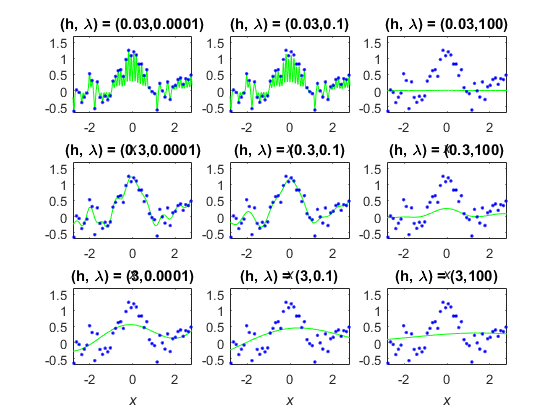
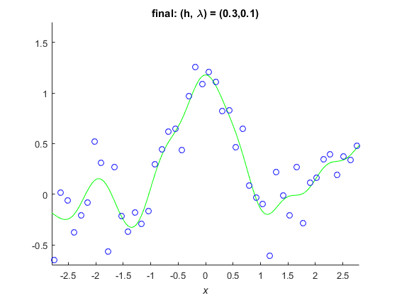

Example 4.3 Model Selection with Cross Validation
- Result in book : Figure 4.9
- Code in book : Figure 4.14
- Output : eg4_3_A.png, eg4_3_B.png
- Usage : eg4_3(), eg4_3(50, 1000)
Contents
Source Code
function eg4_3(n, N)
rng(0);
if nargin < 2
n = 50; N = 1000;
end
x = linspace(-3, 3, n)';
X = linspace(-3, 3, N)';
pix = pi * x;
y = sin(pix) ./ (pix) + 0.1 * x + 0.2 * randn(n, 1);
figure('Name', 'example 4-3 A'); clf; hold on;
x2 = x .^ 2;
X2 = X .^ 2;
xx = repmat(x2, 1, n) + repmat(x2', n, 1) - 2 * x * x';
xX = repmat(X2, 1, n) + repmat(x2', N, 1) - 2 * X * x';
hidx = [0.03 0.3 3];
hhs = 2 * hidx .^ 2;
ls = [0.0001 0.1 100];
m = 5;
u = floor(m * (0 : n - 1) / n) + 1;
u = u(randperm(n));
id = 1;
g = zeros(3, 3, m);
for hk = 1 : length(hhs)
hh = hhs(hk);
hhh = hidx(hk);
k = exp(-xx / hh);
K = exp(-xX / hh);
for ii = 1 : m
ki = k(u ~= ii, :);
kc = k(u == ii, :);
yi = y(u ~= ii);
yc = y(u == ii);
for lk = 1 : length(ls)
l = ls(lk);
t = (ki' * ki + l * eye(n)) \ (ki' * yi);
fc = kc * t;
g(hk, lk, ii) = mean((fc - yc) .^ 2);
end
end
for lk = 1 : length(ls)
l = ls(lk);
t = (k ^ 2 + l * eye(n)) \ (k * y);
F = K * t;
plotFigure(3, 3, id, num2str(hhh), num2str(l), X, F, x, y);
id = id + 1;
end
end
saveas(gcf, 'eg4_3_A', 'png');
[gl, ggl] = min(mean(g, 3), [], 2);
[~, gghl] = min(gl);
L = ls(ggl(gghl));
HH = hhs(gghl);
K = exp(-(repmat(X .^ 2, 1, n) + repmat(x2', N, 1) - 2 * X * x') / HH);
k = exp(-xx / HH);
t = (k ^ 2 + L * eye(n)) \ (k * y);
F = K * t;
figure('Name', 'example 4-3 B'); clf; hold on;
plot(X, F, 'g-', x, y, 'bo');
axis([-2.8 2.8 -0.7 1.7]);
title = strcat( 'final: (h, \lambda) = (', num2str(hidx(gghl)), ', ', num2str(L), ')' );
setFigure(gca, title);
saveas(gcf, 'eg4_3_B', 'png');
end
 